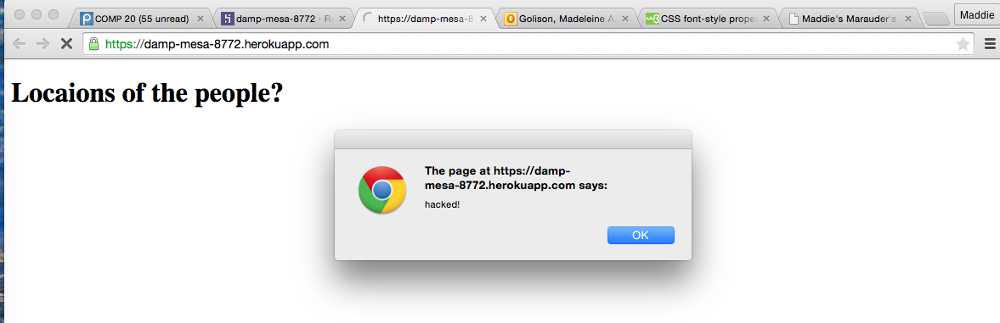
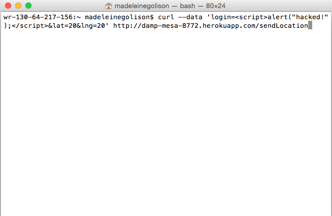

In our assignment 4, we learned how to implement a database that stores information from our assignment 2 (mmap). However, we did not initially realize that our projects are laden with security vulnerabilities. While analyzing Feiyu Lu's code, I learned that he had many vulnerabilities.
During this assignment, I found myself wondering what is a vulnerability. I was not sure at first what distinguishes a vulnerability from bad coding practices. I learned that some issues were a mix of both, but for the most part vulnerabilities were problems with the code that would make it possible for someone else to alter the functionality of an application.
I used a few different methods for finding vulnerabilities. One major one was utilizing curl to insert a script into Feiyu's database. Another method was then reading through his code to see if I could find any obvious flaws.
One of the only obvious ways I was able to break Feiyu's application was by curling bad data (e.g. scripts) to his database. This code would be executed and would break his application's functionality. Other findings I discovered were less obvious. I discovered vulnerabilities that had to do with access to the information in his database. The issue that I found was that anyone could access this information and they could alter it.
 